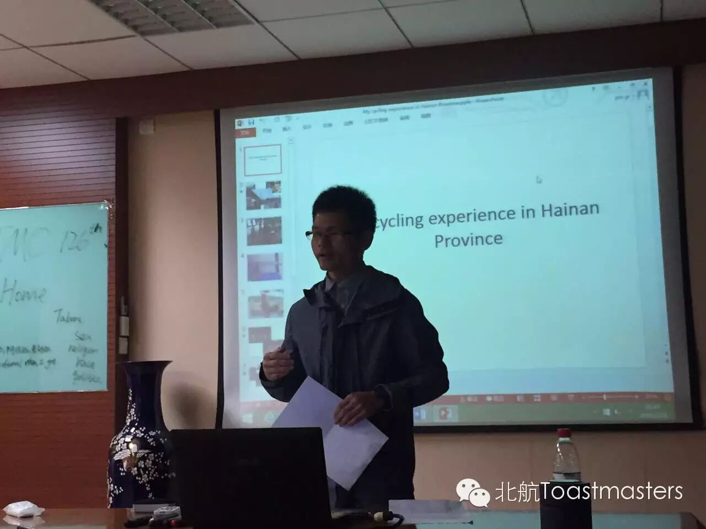

← 返回存档目录
Table Topic ： LEAVING HOMEHan：只有家里才能感受到的亲情，其他地方都体会不到~Joshua：家乡的气候、环境、人都让自己感觉很舒服Amy：曾经父母无微不至的关爱让自己一想到他们就想家John&Mike：初次离家的儿子不适应新环境，父亲教导儿子要走出去，多交朋友Vance&Gastby：十岁的儿子不想爸爸离家工作，严厉的爸爸教导儿子要像个男子汉一样独立Deron：我在家时，父母不用为谁洗碗而争论，但每天父亲都得擦地了Babara：初次离家是在高考后，刚开始很兴奋，后来觉得一个人在陌生的城市很无聊
